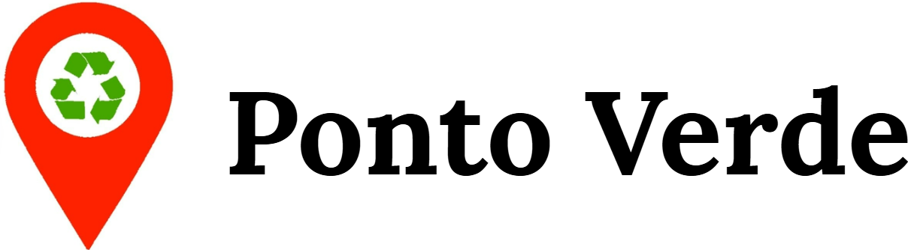
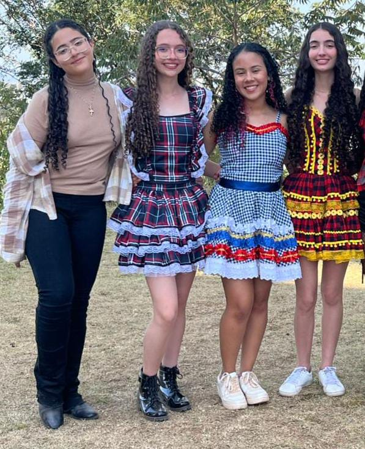
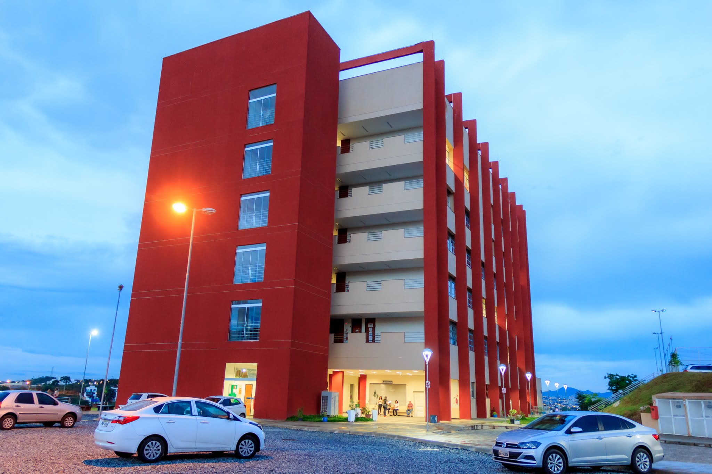

Nosso principal objetivo é auxiliar a população no descarte correto de diversos
tipos de resíduos,
oferecendo informações claras e atualizadas sobre pontos de
coleta seletiva e ecopontos próximos.
Acreditamos que, ao facilitar o acesso a
esses locais, incentivamos práticas mais sustentáveis, reduzimos
o impacto ambiental
e promovemos uma cidade mais limpa e consciente.
Apesar dos avanços, ainda existem obstáculos recorrentes:
Para enfrentar esses desafios, algumas ações são fundamentais:
Somos alunas do CEFET-MG, cursando o técnico em Informática, e estamos desenvolvendo este projeto na disciplina
de Laboratório de Aplicações para Web I.
Nosso intuito é unir tecnologia e sustentabilidade para contribuir com o meio ambiente e facilitar o descarte
consciente.


📧 E-mail: pontoverde@gmail.com
📞 Telefone: (31) 9 9999-9999
📸 Instagram: @pontoverde_recicla
👩💻 Quem somos: Lívia Ferreira Lage, Samantha Evelyn Ribeiro, Lyvia Agatha Cardoso e Larissa Diniz Ferreira